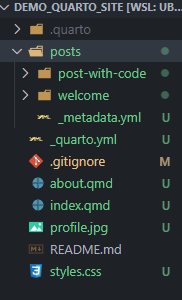

So, Quarto is pretty great. I just finished migrating my own personal website (which you’re already looking at, so I won’t link to it) to use Quarto (rather than {distill}), and I’m liking it a lot so far. I’m particularly excited about Quarto’s built-in support for multiple languages – I’m starting to learn Julia, and so I’m going to be doing some “learning out loud” (a la Jesse Mostipak) and blogging about my Julia journey.
This is a bit of a quibble, but I’m not a huge fan of the default Quarto blog structure – not necessarily the styling/theming or anything like that, but more so the fact that it sets your blog posts as the index (home page) of the site, whereas I’d prefer a more generic landing page with a little bit about me and some social media links, etc. Which the default Quarto blog does include as an about page! So the point of this post is to show you how to modify the default Quarto layout so that:
- your website index (home page,
sitename.com) is a brief “summary” of yourself; - your blog posts are listed at
sitename.com/blog; and - you have a more extensive about page at
sitename.com/about
Beyond that, I’m not going to go into how to change the styling, how to publish, or anything like that, because there are already much better tutorials out there (Danielle Navarro’s blog is great if you’re trying to migrate from distill to Quarto).
Step 0: Install Quarto
Maybe this is obvious, but you’ll need Quarto installed if you want to use it. You can download it here
Step 1: Make a site
I prefer to do this from the command line, but I think you can do it from RStudio as well (I use VSCode, so I’m not 100% up-to-date on all of the RStudio IDE features).
You can do this in the command line by changing your working directory to wherever you want your site’s folder to live, then create a default site via:
quarto create-project PROJECT_NAME --type website:blogThis will create a generic sample site with the following file structure:

(n.b. that you may not have the README file in your directory)
Step 2: Render the site
This is sort of optional, but if you want to get a sense of what the default site looks like, you can render all of the files in it. From the command line, set your current directory to the site folder (that you just created), then run
quarto renderand you should get some notifications that your posts are rendering. Once they’re done, you will see a _site folder. This has all of your files rendered inside of it, and if you open index.html, you can navigate to your site’s home page, which (by default) is the blog listing. This is something we’re going to change. You’ll also notice the about.html page, which is what we actually want to make our index.
Step 3: Change some file names
In your root directory (i.e. whatever you set PROJECT_NAME to earlier; not _site), we want to do the following:
- change the file name of
index.qmdtoblog.qmd - change the file name of
about.qmdtoindex.qmd
You’ll also want to open up the blog.qmd file and change the title (inside the YAML header) to “Blog”. The header should now look like this:
Likewise, you’ll want to change the title of index.qmd (which was about.qmd) from “About” to something else – maybe your name of the name of the site. So it’ll look something like this:
You’ll also obviously want to change the image, include your own social media links, etc., but we won’t cover that here.
Step 4: Make a new about page
I like having the home page (index) be like a brief summary of me, and then I like having a more detailed “About” page just in case people are interested in reading more. We just set the index to be that brief intro or whatever you want to call it, so now we need to create a new about page.
In your root folder (PROJECT_NAME), create a new file called about.qmd
And then within that you can add in whatever content you want – a brief bio, some pictures, whatever. The only thing I include at the outset (beside the content) is a YAML header that looks like this:
---
title: "About Me"
---Step 5: Modify your _quarto.yml file
Now we need to modify the _quarto.yml file, which is in the root directory (PROJECT_NAME). This file provides Quarto with some “big picture” instructions on the overall layout and styling of you site.
Basically we need to do 2 things in this file:
- add
blog.qmdto thenavbarmenu; and - add your site url.
You also might want to change your website title. Either way, after you’re done, your _quarto.yml file should look something like this:
Step 6: Render your site (again)
Now we’re ready to render again! Before you render, make sure you save all of your files. As before, we can render the site from the command line via:
quarto renderAnd your files should update in the _site directory. And that’s pretty much it. You can explore the files in your _site directory and see that our “postcard” is now the index/home page, and your blog and about me pages are accessible via the navbar.
Step 7: Customize and deploy
I’m not going to cover these things, but now that we have our website set up the way we want it, the next steps are to customize the style/theming, add content, include your own social media links, etc. And then finally deploy your site! The main Quarto site has some great resources on how to do all of this.
Wrapping Up
You can see this demo site (I didn’t customize anything beyond what we just walked through) here, and you can see the site’s Github repo here
Hope this helps some folks! Happy Quarto-ing!
Reuse
Citation
@online{ekholm2022,
author = {Eric Ekholm},
title = {Modifying the {Default} {Quarto} {Blog} {Structure}},
date = {2022-07-22},
url = {https://www.ericekholm.com/posts/demo-quarto-site},
langid = {en}
}